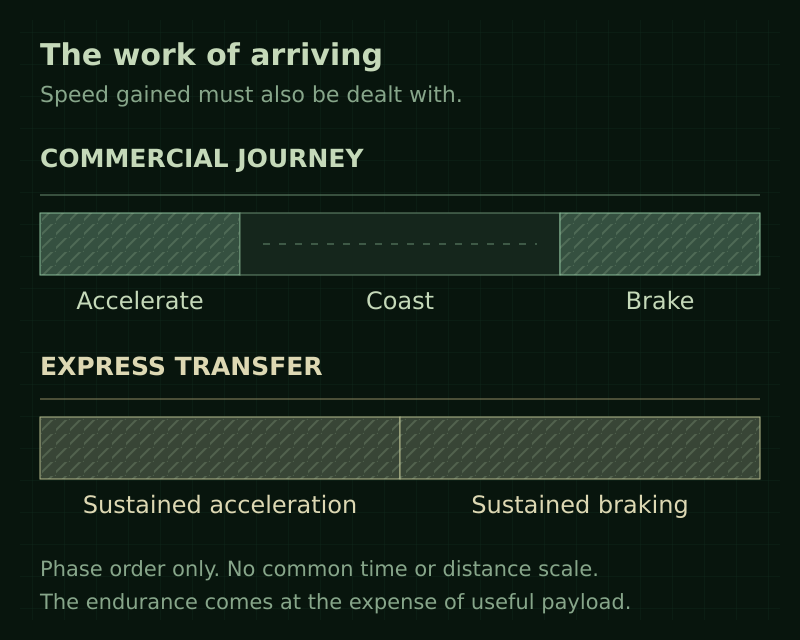

Lore / Ships and travel
Ships and travel
Ships connect Saturn's separated workplaces and communities to each other and to Earth. Their capabilities reflect different jobs and engineering tradeoffs. For a crew, the journey is not simply the distance to the next light. It is the work of arriving with the ship, its people, and its useful cargo intact.
Working ships
Cargo and industrial ships carry crews and supplies between facilities. They are workplaces and transport links, while stations remain the main permanent homes. Ordinary civilian and industrial ships are unarmed; security and escort forces have a separate role.
Names and regular ports
A ship belongs to the life of the places it serves without remaining there. Baikal is the regular port of Kaveri and Ebro. Altair calls at Aquila on its Earth-Saturn route. A large working vessel such as Foundation provides support on which other operations depend, without being a capital warship.
Operators give ships names from recognizable traditions. Clearwell's river names, Farspan's navigational stars, and EarthWorks' built structures express different relationships to the work. The company articles describe those traditions.
Redress and Windfall instead use names chosen for their pirate identities. The former escort and converted work/cargo vessel operate together, providing armed force and cargo capacity. Their current names do not establish who previously operated either hull.
Thrust and momentum
A ship does not need to keep its engine lit simply to keep moving. Thrust changes its motion; shutting down the drive does not erase the motion already gained. Turning the hull changes where the next burn will push, not where the ship is already travelling.
For a working crew, that distinction is practical. Pointing toward a port is not the same as making an approach. Speed gained on the outward burn must be dealt with before arrival. A fast passage is only useful if the ship can still slow down where the work is waiting.
Gravity and rendezvous
Coasting is not an escape from gravity. Around Saturn, gravity continues to bend a vessel's path even while its engines are quiet. An orbit is continuing motion under that pull, not a place where the ship has stopped falling.
Stations move too. A rendezvous requires the crew to bring the ship's motion into agreement with its destination, not merely pass through the same location. The settlement network is connected by planned encounters between moving places.
Commercial journeys
Ordinary commercial ships accelerate, coast to conserve propellant, then brake for arrival. Strong acceleration is compatible with a long commercial journey. Coasting reflects operating economics and ship design, not an arbitrary low universal speed limit.
Express transfers
Specialized express ships can sustain approximately 1g acceleration and braking on interplanetary transfers. This is an exceptional capability rather than routine passenger service. Wealth and state power can buy faster travel, but a military ship is not automatically an express ship.
{kind=link}

Design tradeoffs
Ordinary and express vessels use the same broad drive technology. They differ in design and mass allocation. Express performance requires propellant capacity and propulsion equipment that compete with useful payload. Haulers favor carrying capacity and economical operation. An ordinary hauler cannot gain express endurance merely by selecting a more expensive operating mode.
The engineering basis is a payload-versus-propulsion tradeoff, not a secret engine reserved for wealthy travelers. Exact exhaust velocities, propellant fractions, energy sources, cooling requirements, and journey times remain undefined. No universal acceleration rating is assigned to all ships.
A workship therefore cannot be understood by the size of its engine alone. What it must carry, how long it must keep working, and what support waits at its destination all shape the vessel. The trade is between useful capabilities, not simply between a cheap drive and a better one.
Details still open
Drive technology, propellant chemistry, quantified ship budgets, and normal and exceptional travel schedules have not been established. Communications technology and operating delays, long-voyage accommodation, and crew endurance arrangements also remain open. Named ships' exact berths, transfer arrangements, and positions at particular times are not fixed by their regular port associations.
Related subjects
- Redress
- Windfall
- Society and settlement
- Economy
- State authority and security
- Farspan Logistics
- Encyclopedia directory
Gameplay reference
For the game's controls and flight behavior, see Flight and autopilot.